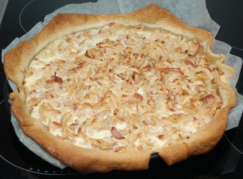

| Zutaten für 12 Portionen: | |
| 250 g | Kuchenteig |
| Haselnüsse, gerieben | |
| Rosinen | |
| Äpfel | |
| 100 g | Rahmquark |
| 4 EL | Zucker |
| 1 | Ei |
| 1 dl | Milch |
Backtrennpapier auf die Form legen und mit Zucker bestreuen. Der Zucker caramelisiert und die Wähe lässt sich besser schöpfen.
Kuchenteig auswallen und auf das Backtrennpapier-Zucker Blech legen.
Geriebene Haselnüsse und Rosinen darauf streuen.
Äpfel grob raffeln, darüber geben.
Nun den Kuchen während 15 Minuten bei 180°C vorbacken.
Rahmquark, Zucker, Ei und Milch verrühren, über die Wähe giessen und sie nochmals 15 Minuten fertig backen.
Herbert Eigenmann, Code: AAK
Von Sandra am 4.1.2010 zubereitet. War OK aber nichts sensationelles. RE
@LINKBACK_TAG@ @WAKELOCK@